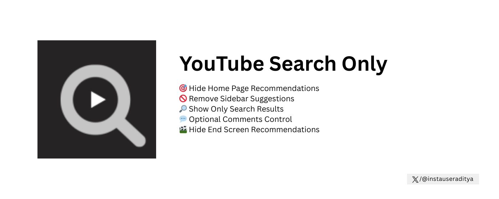

🔍 YouTube Search Only
Complete Documentation & Support Guide
📖 What is YouTube Search Only?
YouTube Search Only is a powerful Chrome extension designed to help you take complete control of your YouTube experience. In today's world of endless content and algorithmic recommendations, it's easy to fall into the rabbit hole of watching video after video without intention.
This extension solves that problem by hiding all YouTube recommendations and showing you ONLY the videos you deliberately search for. It's perfect for students, professionals, researchers, or anyone who wants to use YouTube intentionally rather than mindlessly.
✨ Key Features
🏠 Home Page Control
Completely removes all recommendation feeds from YouTube's homepage. No more endless scrolling through suggested videos.
📺 Sidebar Removal
Hides the "Up Next" and "Related Videos" sidebar while watching videos. Watch what you chose without distractions.
🔍 Search Results Only
Your search results remain fully visible and functional. Find exactly what you're looking for.
💬 Comments Control
Optional toggle to hide/show the comments section. Reduce distractions and focus on the content.
🎬 End Screen Blocking
Removes end screen recommendations and suggested videos that appear when videos finish.
⚡ Easy Toggle
Turn the extension on/off instantly with a simple toggle switch in the popup.
⚙️ How It Works
YouTube Search Only uses advanced content filtering to identify and hide recommendation elements across YouTube. Here's the detailed breakdown:
🎯 What Gets Hidden:
- Homepage Recommendations: All video suggestions on youtube.com homepage
- Trending Content: Trending page and trending section in sidebar
- Watch Page Sidebar: "Up Next" videos and related video suggestions
- Shorts Shelf: YouTube Shorts recommendations throughout the site
- Mix Playlists: Auto-generated mix playlists in recommendations
- End Screens: Video suggestions that appear at the end of videos
- Comments (Optional): Full comments section can be hidden with toggle


✅ What Stays Visible:
- Search Results: All videos from your searches
- Subscriptions: Your subscription feed remains accessible
- Playlists: All your playlists work normally
- Watch History: Your watch history remains functional
📥 Installation Guide
-
Install from Chrome Web Store
Visit the Chrome Web Store and click "Add to Chrome" button. The extension will install automatically.
-
Grant Permissions
The extension needs permission to access YouTube pages and store your preferences. Click "Add Extension" when prompted.
-
Visit YouTube
Navigate to youtube.com - the extension activates automatically and hides all recommendations.
-
Access Extension Popup
Click the extension icon in your Chrome toolbar to open the control popup.
-
Customize Settings
Use the toggle switches to enable/disable the extension or hide/show comments as needed.
📚 User Guide
🎮 Using the Extension
Normal YouTube Usage:
- Open YouTube in your browser
- Use the search bar to find videos you want to watch
- Search results will display normally
- All recommendations and distractions are hidden
Controlling the Extension:
- Click the extension icon in Chrome toolbar
- Use Extension Enable/Disable toggle to turn filtering on/off
- Use Comments Hide/Show toggle to control comments visibility
- Status message shows current extension state
🔧 Advanced Features
Search Activity Tracking:
The extension intelligently tracks when you perform searches. After searching, your search results remain visible for 30 minutes, allowing you to browse search results without interference.
Dynamic Content Handling:
YouTube loads content dynamically. Our extension continuously monitors the page and hides new recommendation elements as they appear, ensuring consistent filtering.
Settings Persistence:
Your preferences (extension on/off, comments visibility) are saved automatically and persist across browser sessions.
❓ Frequently Asked Questions
🔧 Troubleshooting
Extension Not Working
- Make sure the extension is enabled (check chrome://extensions/)
- Refresh the YouTube page (press F5 or Ctrl+R)
- Check if the extension toggle is ON in the popup
- Try disabling and re-enabling the extension
Some Recommendations Still Visible
- Refresh the page to allow the extension to process new elements
- Clear your browser cache and reload YouTube
- Make sure you're using the latest version of the extension
Toggle Buttons Not Responding
- Refresh the YouTube tab
- Close and reopen the extension popup
- Check browser console (F12) for any error messages
Comments Not Hiding
- Make sure the "Comments Hide/Show" toggle is ON (green)
- Scroll down to the comments section - it may take a moment to hide
- Refresh the page if comments still appear
🔒 Privacy & Permissions
Required Permissions:
activeTab - Allows the extension to interact with YouTube
pages you're currently viewing
storage - Saves your preferences (extension on/off,
comments visibility)
What We DON'T Do:
- ❌ Collect any personal information
- ❌ Track your browsing history
- ❌ Send data to external servers
- ❌ Inject advertisements
- ❌ Modify video content
- ❌ Access data from other websites
Your Data is Safe:
The extension operates entirely within your browser. All filtering happens locally on your device. We have no servers, no analytics, and no data collection whatsoever.
📝 Version History
Version 1.0 (Current)
- ✅ Initial release
- ✅ Hide home page recommendations
- ✅ Remove sidebar suggestions
- ✅ Show only search results
- ✅ Optional comments hiding
- ✅ Toggle controls in popup
- ✅ Clean, modern interface
- ✅ Privacy-focused (no data collection)
📧 Support & Contact
We're committed to providing the best experience with YouTube Search Only. If you have any questions, feedback, feature requests, or encounter any issues, we'd love to hear from you!
Get in Touch
For any recommendations, bug reports, feature suggestions, or support inquiries, please email us at:
incogfeed@gmail.comWe typically respond within 24-48 hours
What to Include in Your Email:
- Bug Reports: Describe the issue, steps to reproduce, and your Chrome version
- Feature Requests: Explain what feature you'd like and why it would be useful
- General Feedback: Share your experience, suggestions for improvement
- Support Questions: Describe what you need help with in detail